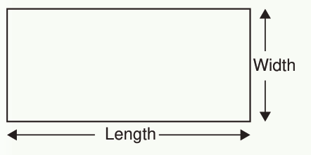

Activity 1
Measuring the perimeter of a rectangle

Width
Length
Steps
1.
Put the 0 mark on a tape measure at one corner of the rectangle.
2.
Measure the length of the rectangle’s boundary until you reach the starting point.
3.
Record the measurement of the length obtained.
4.
Measure and record the length of each side of the rectangle using a ruler.
5.
Add the lengths of all sides of the rectangle in step 4.
6.
Compare the results from step 3 with those from step 5.
7.
What is the perimeter of the rectangle.
In Activity 1, the total length of the boundaries obtained is the perimeter of the rectangle. Thus, the perimeter of a rectangle is obtained by adding the lengths of all its four sides
The formula for finding the perimeter of a rectangle is given by;
If l =length and w =width, then the perimeter will be;